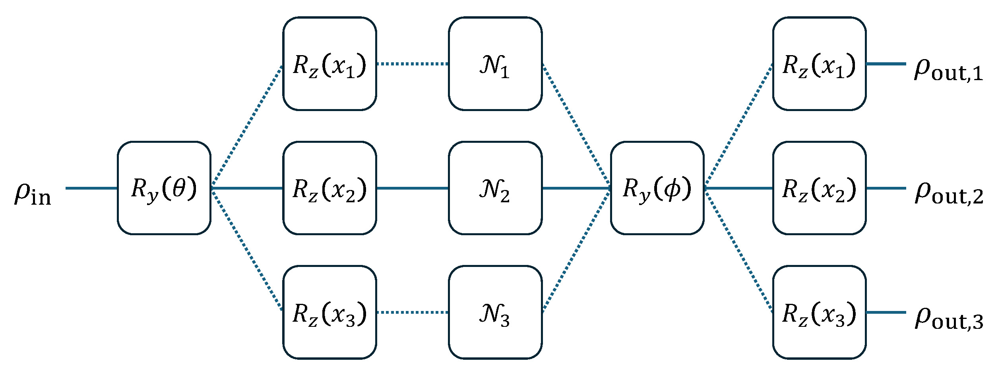

Batch Computation in QuAIRKit¶
This tutorial will show you how to use the batch computation feature in QuAIRKit.
Table of Contents
[1]:
import torch
import quairkit as qkit
from quairkit import Circuit
from quairkit.database import *
from quairkit.loss import ExpecVal, Measure
qkit.set_dtype('complex128')
[2]:
num_qubits = 2
batch_size = 3
Quantum circuit¶
Circuit class in QuAIRKit now support add batched parameters and gates to the circuit.
For parameterized gates like Rx, Ry, Rz, you can add batched parameters to the circuit by passing a 3D tensor to gate function. The size of parameter tensor should be len(qubits_idx) x batch_size x num_acted_param, where
len(qubits_idx) is the number of qubits acted by the gates;
batch_size is the number of batched parameters;
num_acted_param is the number of parameters that characterize the gate. For example, num_acted_param for Ry gate is 1 and that for universal three qubit gate is 15.
[3]:
cir = Circuit(num_qubits)
cir.ry(param=torch.rand(num_qubits * batch_size * 1))
cir.universal_two_qubits([0, 1], param=torch.rand(1 * batch_size * 15))
print(cir())
---------------------------------------------------
Backend: state_vector
System dimension: [2, 2]
System sequence: [0, 1]
Batch size: [3]
# 0:
[ 0.81-0.38j 0.04+0.11j -0.02+0.28j -0.25+0.21j]
# 1:
[ 0.33-0.58j 0. -0.04j -0.14+0.18j -0.58+0.4j ]
# 2:
[ 0.63-0.27j 0.13+0.47j 0.11+0.14j -0.23+0.46j]
---------------------------------------------------
For oracle unitaries stored as torch.Tensor, one can add batched matrices to the circuit by oracle or control_oracle
[4]:
oracle = random_unitary(1, size=batch_size)
print(oracle.shape)
cir.oracle(oracle, [1])
cir.control_oracle(oracle, [1, 0])
print(cir())
torch.Size([3, 2, 2])
---------------------------------------------------
Backend: state_vector
System dimension: [2, 2]
System sequence: [1, 0]
Batch size: [3]
# 0:
[ 0.72+0.01j 0.03+0.36j -0.31+0.35j -0.35+0.09j]
# 1:
[-0.08-0.16j 0.35+0.65j 0.01-0.07j 0.62+0.18j]
# 2:
[-0.58-0.39j -0.19-0.26j 0.46-0.16j -0.09-0.4j ]
---------------------------------------------------
QuAIRKit also supports batched channel. For channels stored by their Kraus representation or Choi representation, one can add batched matrices to the circuit by kraus_channel or choi_channel. In usual cases we recommend using Kraus representation.
[5]:
kraus = random_channel(num_qubits=1, size=batch_size)
choi = random_channel(num_qubits=1, target='choi', size=batch_size)
cir.kraus_channel(kraus, [0])
# cir.choi_channel(choi, [1])
output_state = cir()
print(output_state)
---------------------------------------------------
Backend: density_matrix
System dimension: [2, 2]
System sequence: [0, 1]
Batch size: [3]
# 0:
[[ 0.23+0.j -0.02-0.12j -0.3 +0.04j 0.16+0.2j ]
[-0.02+0.12j 0.07-0.j 0.02-0.16j -0.12+0.08j]
[-0.3 -0.04j 0.02+0.16j 0.41-0.j -0.18-0.27j]
[ 0.16-0.2j -0.12-0.08j -0.18+0.27j 0.28-0.j ]]
# 1:
[[0.09-0.j 0.07+0.04j 0.2 -0.03j 0.12+0.11j]
[0.07-0.04j 0.08-0.j 0.14-0.11j 0.14+0.03j]
[0.2 +0.03j 0.14+0.11j 0.49-0.j 0.27+0.29j]
[0.12-0.11j 0.14-0.03j 0.27-0.29j 0.35+0.j ]]
# 2:
[[ 0.2 -0.j -0. -0.12j 0.23-0.13j -0.15-0.14j]
[-0. +0.12j 0.14-0.j 0.12+0.18j 0.03-0.05j]
[ 0.23+0.13j 0.12-0.18j 0.39+0.j -0.08-0.21j]
[-0.15+0.14j 0.03+0.05j -0.08+0.21j 0.27-0.j ]]
---------------------------------------------------
[6]:
(kraus.mH @ kraus).sum(dim=-3)
[6]:
tensor([[[ 1.0000e+00+0.0000e+00j, 5.5511e-17+0.0000e+00j],
[ 5.5511e-17+0.0000e+00j, 1.0000e+00+0.0000e+00j]],
[[ 1.0000e+00+0.0000e+00j, 0.0000e+00-1.1102e-16j],
[ 0.0000e+00+1.1102e-16j, 1.0000e+00+0.0000e+00j]],
[[ 1.0000e+00+0.0000e+00j, -1.2490e-16+5.5511e-17j],
[-1.2490e-16-5.5511e-17j, 1.0000e+00+0.0000e+00j]]])
One can check this circuit preserves the trace.
[7]:
tr = output_state.trace()
torch.allclose(tr, torch.ones_like(tr))
[7]:
True
Example¶
For clarity, below figure illustrates how the batched computation works in quantum circuit.

The code of this circuit is given as follows
[8]:
rho = random_state(1)
list_x = torch.rand(batch_size)
list_depo = torch.stack([depolarizing_kraus(torch.rand(1))
for _ in list(range(batch_size))])
batch_cir = Circuit(1)
batch_cir.ry()
batch_cir.rz(param=list_x)
batch_cir.kraus_channel(list_depo, 0)
batch_cir.ry()
batch_cir.rz(param=list_x)
print(batch_cir(rho))
---------------------------------------------------
Backend: density_matrix
System dimension: [2]
System sequence: [0]
Batch size: [3]
# 0:
[[ 0.56+0.j -0.11+0.04j]
[-0.11-0.04j 0.44+0.j ]]
# 1:
[[ 0.66+0.j -0.26+0.18j]
[-0.26-0.18j 0.34+0.j ]]
# 2:
[[ 0.55-0.j -0.03+0.08j]
[-0.03-0.08j 0.45+0.j ]]
---------------------------------------------------
Measurement¶
The expectation value and measurement in QuAIRKit also supports batch computation.
We start with an observable represented by Hamiltonian and a projection valued measure (PVM) represented by torch.Tensor.
[9]:
H = random_hamiltonian_generator(num_qubits)
print(H.pauli_str)
basis = random_unitary(1).unsqueeze(-1)
pvm = basis @ basis.mH
print(pvm.shape)
[[0.5952776079171331, 'X1'], [-0.9670744798724846, 'Z1'], [0.08143908571771741, 'Y1']]
torch.Size([2, 2, 2])
One can call the expec_val of the State class, or initialize the neural network module ExpecVal that input states.
[10]:
op = ExpecVal(H)
print(op(output_state))
print(output_state.expec_val(H))
print(output_state.expec_val(H, decompose=True)) # return the expectation value of each Pauli term
tensor([-0.4521, 0.2084, -0.2243])
tensor([-0.4521, 0.2084, -0.2243])
tensor([[-0.2336, 0.4081, -0.1017],
[-0.2814, -0.1450, -0.1751],
[ 0.0629, -0.0547, 0.0526]])
Similarly, to measure the output state, one can call the measure of the State class, or initialize the neural network module Measure that input states. Below codes measure the second qubits of output state.
[11]:
op = Measure(pvm)
print(op(output_state, [1]))
print(output_state.measure(pvm, [1]))
tensor([[0.7380, 0.2620],
[0.3431, 0.6569],
[0.7376, 0.2624]])
tensor([[0.7380, 0.2620],
[0.3431, 0.6569],
[0.7376, 0.2624]])
One can also keep the collapsed state of the measurement by setting keep_state to True, or select the desired output state.
[12]:
prob, collapsed_state = op(output_state, [1], desired_result='0', keep_state=True)
print(collapsed_state)
---------------------------------------------------
Backend: density_matrix
System dimension: [2, 2]
System sequence: [0, 1]
Batch size: [3, 1]
# 0:
[[ 0.14-0.j 0.07-0.14j -0.18+0.08j -0.01+0.23j]
[ 0.07+0.14j 0.18+0.j -0.17-0.15j -0.24+0.1j ]
[-0.18-0.08j -0.17+0.15j 0.29+0.j 0.15-0.3j ]
[-0.01-0.23j -0.24-0.1j 0.15+0.3j 0.38-0.j ]]
# 1:
[[0.09+0.j 0.05-0.09j 0.16+0.j 0.08-0.16j]
[0.05+0.09j 0.12+0.j 0.08+0.16j 0.21+0.j ]
[0.16-0.j 0.08-0.16j 0.34+0.j 0.17-0.35j]
[0.08+0.16j 0.21-0.j 0.17+0.35j 0.44+0.j ]]
# 2:
[[ 0.16-0.j 0.08-0.16j 0.15-0.12j -0.04-0.21j]
[ 0.08+0.16j 0.21-0.j 0.19+0.09j 0.19-0.15j]
[ 0.15+0.12j 0.19-0.09j 0.28+0.j 0.14-0.28j]
[-0.04+0.21j 0.19+0.15j 0.14+0.28j 0.36+0.j ]]
---------------------------------------------------